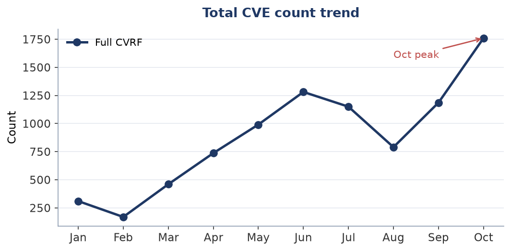
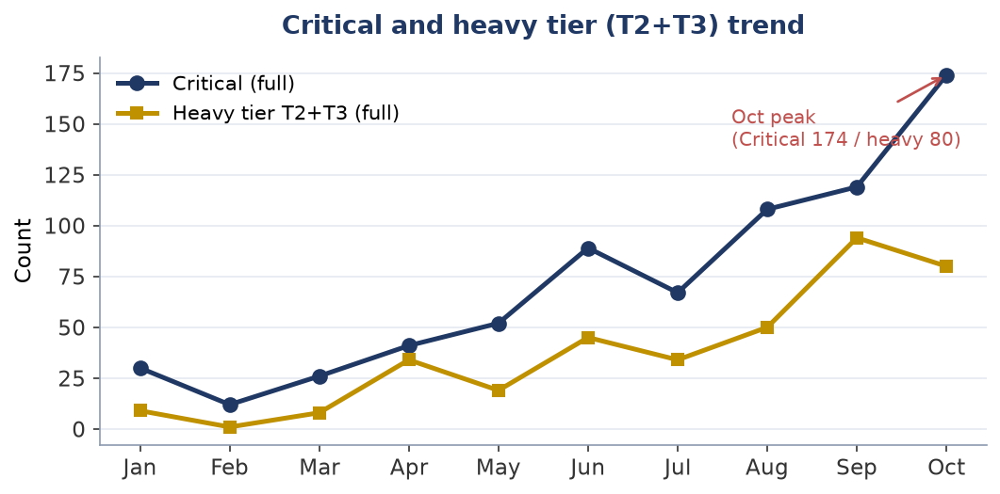
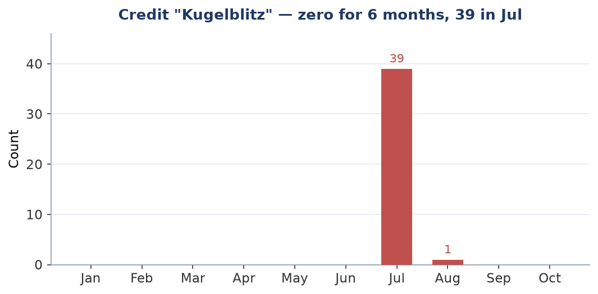
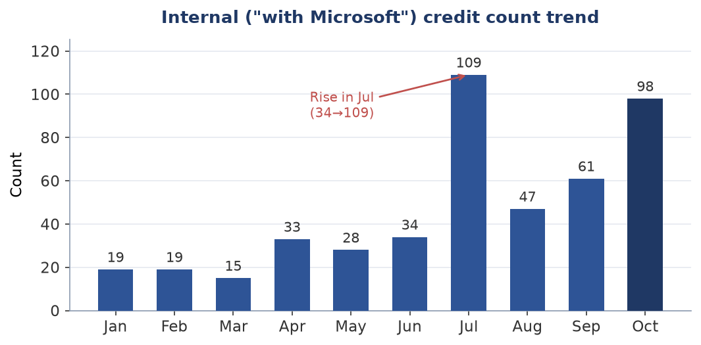

Technical report (machine-generated facts + human interpretation)
The surge in vulnerability discovery by frontier AI
A situational analysis as of October 2026, with implications for practitioners
Practitioners and decision-makers responsible for vulnerability and patch management
About this report's structure and dates This report is composed by injecting human interpretation into a factual record (figures, tables, charts) generated by an automated monitoring script. Fact data acquired: 2026-10-15 (frozen as a snapshot) Interpretation (analysis) updated: 2026-10-14 Note: facts are automatic, interpretation is updated separately by a human. If the two dates are far apart, the interpretation may not reflect the latest facts. |
On MSRC's after-the-fact revisions This report is based on values finalized on 2026-10-15. MSRC revises past months after the fact (e.g., June CVE 1281→1205), so post-revision data may appear to give different results. Revision records are retained separately. |
[Disclaimer / Sources] • This report is an informal analysis by a hypothetical author projecting a practitioner responsible for vulnerability response; it is not the view of any specific individual or organization. • Fact data sources: Microsoft MSRC CVRF, CISA KEV, and other public information. • The analysis is generated with AI (a large language model). Facts are verified where possible, but accuracy and completeness are not guaranteed. Confirm important judgments against primary sources. • Facts are auto-updated but interpretation is updated as needed; the two dates may be far apart (see header). • Freshness: the facts in this report are as of 2026-10-15. KEV and PoC status change moment to moment; consult primary sources for the latest. |
[Note on neutrality] This report's analysis is generated using Anthropic's AI (Claude). The report refers to that company's Project Glasswing and the like, but this is intended as neutral description based on public information and does not endorse or advocate for any specific company. Readers should consult primary sources and judge independently. |
Executive summary
October 2026's Patch Tuesday is the largest month in this report's observation window (from January 2026). All CVRF went from 1,186 to 1,760, and core Microsoft from 975 to 1,419. Within core, CVEs assigned by Microsoft went from 973 to 1,417 — the same 444 as the rise in core — and 1,411 of the 1,419 were first published at the 13 October release.
Some things did not move with the count. The tier requiring change control fell in core, from 93 to 79. Critical rose across all CVRF from 119 to 174, but fell in core from 114 to 77. Of the 174, 97 sit on the excluded side (Azure Linux package advisories).
There are three zero-days (by Microsoft's definition: confirmed exploited, or publicly disclosed), and one is confirmed exploited. That one is rated Important, not Critical.
Conclusion in one line The total reached a high for the observation window, while the heavy tier and core Critical both fell. How the count grows does not track how heavy or how dangerous the month is. |
Terms: "all CVRF" and "core Microsoft" All CVRF — every CVE in MSRC's monthly document, including Edge/Chromium, Azure Linux package advisories, and Azure cloud advisories. Press tallies disagree because they cut this population differently. Core Microsoft — all CVRF with the CVEs whose affected products are all Azure Linux packages, or all Edge/Chromium, removed. Azure cloud advisories stay in core (this month's fourteen azure_cloud CVEs). CVEs whose affected products mix in a Microsoft product also stay in core. The split resolves product identifiers to product names and does not read the CVE title. This month: 1,419 core against 341 excluded — all 341 excluded are Azure Linux. There is not a single Edge/Chromium advisory in this month's CVRF. |
Analysis: the largest month, and the heavy tier fell
The total set a high this month. Beyond that, what core contains and which axes did not rise were both checked.
|
September 2026 |
October 2026 |
All CVE |
1,186 |
1,760 |
Core Microsoft |
975 |
1,419 |
Credited |
926 |
1,334 |
Critical (all / core) |
119 / 114 |
174 / 77 |
Heavy tier (T2+T3, core) |
93 |
79 |
Zero-days |
2 (both exploited) |
3 (1 exploited, 2 publicly disclosed) |
Where the 444-item rise in core sits was checked before freezing. Of the 1,419 core CVEs, 1,417 have Microsoft as CNA (the assigning organisation), and 1,411 had their first revision at the 13 October release. Eight came out before the release, all within October; none was published in an earlier month and revised in October.
The rise is not concentrated in one product. By category, Windows services (314 → 478), kernel and drivers (147 → 271), Office (125 → 172), and .NET and developer tools (22 → 62) rose, while SQL/Dynamics fell from 64 to 27. By product, Excel (32 → 69), DNS Server (4 → 52), Windows Kernel (11 → 46), Windows Installer (5 → 38) and Win32k (2 → 36) stand out. Why it rose is not something this report can tell. Only the fact of the rise is recorded.
The excluded side rose too, from 211 to 341. Azure Linux advisories went from 187 to 341, with CNAs such as Linux (172) and apache (80).
What gets exploited is not Critical — four months running
This month's single confirmed-exploited item is CVE-2026-96951 (a security feature bypass in Windows Shell), rated Important. None of the month's 174 Critical items is confirmed exploited.
Every month from July through October that had a confirmed-exploited item had none rated Critical — four months running. May, though, had a Critical one. This does not mean Critical items are not exploited. It means a triage that reads Critical and stops would have missed every confirmed-exploited item across these four months.
The other two are publicly disclosed and not confirmed exploited.
CVE-2026-108398 (.NET Framework security feature bypass, Important) — local, by an authenticated attacker.
CVE-2026-92707 (MessagePack-CSharp denial of service, Moderate) — MessagePack-CSharp is an open-source component included in Visual Studio, and it sits in core under the classification rule. Its affected products list Visual Studio 2022 and 2026 as well as .NET's MessagePack package for SignalR; because a Microsoft product is in the mix, the rule (mixtures are core) counts it as core. The CVE was assigned by GitHub, not Microsoft.
Count and weight: what did not move together
In a month when the count rose, the axes that stand for response weight did not rise with it.
The heavy tier (T2+T3, core) fell from 93 to 79. As a share of core, from 9.5% to 5.6%.
Core Critical fell from 114 to 77. That breaks down as 59 remote code execution, 14 elevation of privilege, 3 spoofing and 1 information disclosure — 77 in total.
Critical across all CVRF rose to 174 because Critical on the excluded side went from 5 to 97. Of those 97, Linux is the CNA for 89, and all 97 are Azure Linux package advisories.
Read only "all-CVRF Critical", and this looks like a heavy month. Restricted to core, both Critical and the heavy tier are lower than last month. Do not compare Critical counts without checking which population they come from.
Implications and recommended actions
These are recommendations drawn from this report's analysis, not settled regulatory requirements. Specific supervisory expectations should be confirmed against primary sources.
1. What to monitor (continued)
Do not use CVE count as a threat indicator. This month it rose 48.4% on last month, yet the heavy tier fell and so did core Critical. The count moved in step with neither defensive load nor risk.
Track the tier requiring change control instead. This month it went from 93 to 79 in core. Even the month with the largest total can carry a lighter deployment plan than the month before.
But a count is not an amount of work. How far the scope spreads across products changes the effort, and this report does not measure that distribution (the same limit as last month).
2. Decouple triage from the severity label (continued)
None of this month's 174 Critical items is confirmed exploited; the one confirmed item is Important. Across July to October, no month's confirmed-exploited items included a Critical one.
May, on the other hand, did have a confirmed-exploited Critical. What the four-month record says is that ranking by severity label is unreliable in itself.
The destination is unchanged: CISA KEV, EPSS, and asset reachability in combination.
Check the population before reading a Critical count. Of this month's 174 all-CVRF Critical items, 97 are Azure Linux advisories.
3. Emergency patch SLA
This month's confirmed-exploited item (CVE-2026-96951) was listed in CISA KEV as of the 15 October retrieval. Treat it as an item to start deploying the same day. This report did not retrieve the remediation due date; read it from the KEV entry.
Per the vendor's CVSS vector, the preconditions are: reachable over the network, no prior privileges required, attack complexity low — but user interaction is required. The impact is a security feature bypass, and the stated cause is command injection. CVSS base score 8.8; 31 affected products.
The temporal metric is "functional exploit exists" (E:F), agreeing with the CVRF's exploitation entry (exploitation detected).
4. Check your own filter (continued)
Last issue added "confirmed exploited" as a condition for the KEV/EPSS matched set. This month that set is 1,164 (786 last month); the confirmed-exploited item is in it and was detected as a new KEV listing. That item also carries an external credit, so it would have been in the set under the conditions before last issue as well.
A zero-day that is only publicly disclosed is not a condition for matching. This month's CVE-2026-92707 is outside the set and has no EPSS value. The other publicly disclosed item (CVE-2026-108398) is in the set through a different condition. The conditions were not changed in this issue.
When matching external threat intelligence against your estate, check every month, with the month's numbers, what has fallen outside the set being matched.
5. Edge/Chromium auto-update (continued)
This month's CVRF contains no Edge/Chromium advisory at all (24 last month). Why is not something this report can tell. Absence from the CVRF does not mean Edge shipped no fixes.
The point does not depend on the count. Applications that embed Electron/CEF (Teams, Slack, VS Code and others) do not benefit from the browser's auto-update. Enumerating those dependencies in an SBOM matters just as much in a month where the count is zero.
6. Business continuity for AI dependence (continued)
Where AI sits in a workflow, treat dependence on a top-tier model as a continuity concern, and make model redundancy and fallback the default.
Primary-data breakdown — October 2026 Patch Tuesday
The following is a tally of primary data acquired from MSRC CVRF v3.0 (frozen snapshot 2026-10-15). The population is shown both as "full CVRF" and as "core Microsoft", the latter excluding CVEs whose affected products are all Edge/Chromium or all Azure Linux. Azure cloud is not excluded — this month's fourteen azure_cloud CVEs sit in core. Figures and tables are generated from the state; the following are fact-based key points attached to each table.
Table 1. By severity (two populations shown)
Severity |
Full CVRF |
(%) |
Core MS products |
(%) |
Critical |
174 |
10% |
77 |
5% |
Important |
1433 |
81% |
1338 |
94% |
Moderate |
128 |
7% |
1 |
0% |
Low |
23 |
1% |
1 |
0% |
Unrated |
2 |
0% |
2 |
0% |
Total |
1760 |
100% |
1419 |
100% |
Table 1 (by severity) — key point
Critical rose from 119 to 174, the highest in the observation window. As a share of all CVRF it went from 10.0% to 9.9% — essentially flat. Of the 174, 97 are on the excluded side (Azure Linux package advisories, with Linux as CNA for 89); core Critical is 77. Core Critical fell from 114, and its share of core from 11.7% to 5.4%. The 77 break down as 59 remote code execution, 14 elevation of privilege, 3 spoofing and 1 information disclosure, and none of them is confirmed exploited.
Table 2. By reboot class (the operational-workload axis)
Class |
Description |
Full CVRF |
Core MS products |
T3 |
Staged rollout required (Boot/Crypto) |
8 |
7 |
T2 |
Requires change management / maintenance window |
72 |
72 |
T0/T1 |
Auto-update / steady pipeline |
1680 |
1340 |
Table 2 (by reboot class) — key point
T2 and T3 together — the heavy tier — total 79 in core (72 T2, 7 T3), down from 93 last month; the month before was 42. Core grew from 975 to 1,419, so the share fell from 9.5% to 5.6%. In the month with the largest total, the heavy tier did not grow. This report does not measure how those 79 are distributed across products; a lower count cannot be read as a lighter month.
Table 3. Finder major categories (full CVRF)
Category |
Count |
(%) |
Note |
Uncredited |
426 |
24% |
May include automation (not asserted) |
External researchers (named) |
1000 |
57% |
Named external finders |
Anonymous |
167 |
9% |
Self-identified anonymous |
Internal (with Microsoft etc.) |
98 |
6% |
Includes Kugelblitz/MORSE/WARP/ACS |
Hash identifier |
69 |
4% |
MS-anonymized identifier (identity unknown) |
Table 3 (by discoverer bucket) — key point
External credits went from 705 to 1,000, uncredited CVEs from 260 to 426, and anonymous from 92 to 167. Uncredited as a share of all CVRF went from 21.9% to 24.2%. Every bucket rose along with the total, and no change in who finds things can be read from this table. The rise is recorded as a fact and nothing more.
Table 4. Finder breakdown of Critical vulnerabilities (aggregated, no names)
Discoverer |
Critical count |
Tendency |
Uncredited |
98 |
Possibly automation (not asserted) |
External researchers (named) |
48 |
Majority of Critical |
Anonymous |
13 |
— |
Internal (ACS/WARP/MORSE) |
8 |
Few (mainly Networking/Hyper-V) |
Hash identifier |
7 |
— |
Kugelblitz (Edge, ref.) |
0 |
Does not appear in Critical (surface only) |
Counts only (no personal names stored in the fact data). The top rows are per-bucket and sum to the Critical total. The Kugelblitz row is a cross-cutting reference (not additive). Individual researcher names and CVE examples are given as prose in the interpretation.
Table 4 (discoverers of Critical) — key point
Critical items without a credit went from 10 last month to 98. As a share of Critical, from 8.4% to 56.3%. But 97 of the 98 are on the excluded side (Azure Linux package advisories); in core, one Critical item carries no credit. This table counts all CVRF, so in a month when excluded-side Critical rises, the uncredited row swells with it. Following the discipline established earlier, no inference is drawn about who found something from the absence of a credit.
Table 5. By product category (full CVRF)
Category |
Count |
(%) |
Win Services/Components |
478 |
27% |
Azure Linux (re-listing) |
341 |
19% |
Kernel/Driver |
271 |
15% |
Office/Word/Excel/PPT |
172 |
10% |
Networking |
134 |
8% |
Other |
62 |
4% |
.NET/Dev |
62 |
4% |
Graphics/Media |
54 |
3% |
Microsoft (other) |
36 |
2% |
RDP/Remote |
34 |
2% |
Auth/Identity |
31 |
2% |
SQL/Dynamics |
27 |
2% |
Hyper-V/Virtual |
26 |
1% |
Azure/Cloud |
14 |
1% |
Exchange |
10 |
1% |
Boot/Crypto (T3) |
7 |
0% |
SharePoint |
1 |
0% |
Table 5 (by product category) — key point
This table has been generated from the product-identifier classification (v2) since last issue, and this month is its second point. These two points are the only ones that can be placed side by side. Windows services (+164), Azure Linux (+154), kernel and drivers (+124), Office (+47), and .NET and developer tools (+40) rose; SQL/Dynamics (-37) and Edge/Chromium (-24) fell. "Other" went from 40 to 62. "Other" is the list of items in scope with no rule yet, and reads as the rules to add.
Do not place it beside Table 5 from August or earlier. The classifier version differs.
Appendix: an inventory of credits suggesting "AI"
The credit name "Kugelblitz" appears 39 times in July, once in August, and zero times in September and October. It has never appeared against a Critical item.
That progression cannot be interpreted. What can be said is that the name has not appeared for two months running. This month, for what it is worth, the CVRF carries no Edge/Chromium advisory at all.
The discipline is unchanged: nothing is inferred about what such a credit name is. What was counted is a match on a credit string, and nothing else.
Comparison with historical data — the January–October 2026 trend
The conditions for month-on-month comparison hold across three months: August, September and October. All three are computed with the product-identifier classifier (v2) and frozen at the same distance from Patch Tuesday (two days after). July and earlier use a different classifier. That is why the "core Microsoft" column has been dropped from the trend table; every axis plotted below is independent of the classifier.
Trend table (only real numbers robust to acquisition lag)
Month |
CVE full |
Critical |
Heavy(T2+T3) |
Kugelblitz |
Internal(MS) |
Jan |
310 |
30 |
9 |
0 |
19 |
Feb |
169 |
12 |
1 |
0 |
19 |
Mar |
460 |
26 |
8 |
0 |
15 |
Apr |
737 |
41 |
34 |
0 |
33 |
May |
991 |
52 |
19 |
0 |
28 |
Jun |
1281 |
89 |
45 |
0 |
34 |
Jul |
1150 |
67 |
34 |
39 |
109 |
Aug |
790 |
108 |
50 |
1 |
47 |
Sep |
1186 |
119 |
94 |
0 |
61 |
Oct |
1760 |
174 |
80 |
0 |
98 |
Note: the 'CVE core' (core Microsoft products) column is not shown. The population classifier changed to v2 (affected-product based) from 2026-Aug, and placing v2 values in the same column as months frozen under v1 (title based) would render a change of classifier as a trend — an apparent collapse in core products. The current month's core breakdown is in the tables above, where only one classifier version is involved.

Fig 1: Total CVE count trend (full CVRF)
Chart 1 (total CVE count) — reading
This month's 1,760 is the highest in the observation window (next is June's 1,281). The curve corresponds neither to defensive load nor to risk: this month's rise came on both the core and the excluded side, and on the core side the heavy tier fell.

Fig 2: Critical count and heavy tier (T2+T3) trend
Chart 2 (Critical and the heavy tier) — reading
This month the two lines moved in opposite directions. Critical (all CVRF) is 174, the highest in the window; the heavy tier (all CVRF) fell from 94 in September to 80. The rise in Critical comes from the 97 on the excluded side, and core Critical fell. This chart plots all CVRF, so the movement in Azure Linux Critical shows up directly in the line.

Fig 3: Monthly appearance of the credit "Kugelblitz"
Chart 3 (Kugelblitz) — reading
After the July spike, one in August and zero in September and October. This month the CVRF carries no Edge/Chromium advisory at all. The shape of the curve does not tell us about an actor's activity.

Fig 4: Internal ("with Microsoft") credit count trend
Chart 4 (internal discovery) — reading
Microsoft internal-discovery credits rose from 61 to 98. Their share of all credited CVEs also rose, from 6.6% to 7.3%. Last month count and share went opposite ways; this month they move together. This chart plots the count.
What the trend shows (summary) The total and Critical (all CVRF) reached highs for the observation window. The heavy tier fell. The rise in Critical happened on the excluded side (Azure Linux). Core Critical fell. "Core Microsoft" and Table 5 can be compared only across August to October. Internal discovery rose by count and by share together. The chart plots the count. |
KEV / EPSS — prioritizing immediate response
The following cross-references the target CVEs (T2/T3 ∨ Critical ∨ external-researcher credit ∨ confirmed exploitation) against CISA KEV and FIRST EPSS. KEV = a discrete fact of exploitation confirmed by CISA (the notification trigger; a separate source from Microsoft's own exploitation flag, which this report calls “confirmed exploitation”). EPSS = an estimate of exploitation probability (a point-in-time value, changes daily, for reference). No discoverer or causation is asserted from these numbers.
Immediate-response targets — listed in CISA KEV (as of 2026-10-15)
CVE |
Product |
Severity |
Reboot class |
CVE-2026-96951 |
Windows Shell |
Important |
T0/T1 |
Top EPSS — estimated exploitation probability (as of 2026-10-14)
CVE |
Product category |
EPSS |
Percentile |
CVE-2026-70049 |
Microsoft (other) |
0.0227 |
82.7% |
CVE-2026-88091 |
Win Services/Components |
0.0214 |
81.6% |
CVE-2026-100214 |
SQL/Dynamics |
0.0183 |
78.4% |
CVE-2026-96186 |
Graphics/Media |
0.0165 |
76.0% |
CVE-2026-87692 |
Exchange |
0.0159 |
75.1% |
CVE-2026-85900 |
Office/Word/Excel/PPT |
0.0152 |
74.0% |
CVE-2026-96951 |
Win Services/Components |
0.0151 |
73.8% |
CVE-2026-70035 |
.NET/Dev |
0.0127 |
69.2% |
CVE-2026-83520 |
.NET/Dev |
0.0127 |
69.2% |
CVE-2026-70082 |
Networking |
0.0120 |
67.6% |
CVE-2026-83635 |
Networking |
0.0120 |
67.6% |
CVE-2026-83665 |
Networking |
0.0120 |
67.6% |
CVE-2026-83655 |
Other |
0.0120 |
67.6% |
CVE-2026-83855 |
Win Services/Components |
0.0120 |
67.6% |
CVE-2026-105723 |
Win Services/Components |
0.0115 |
66.2% |
Note: EPSS is updated daily and its values change. The table above is a point-in-time snapshot (as of 2026-10-14) and is not used as a standalone trend metric. Only KEV is used as a notification trigger (EPSS is not).
Note: product names (KEV table) and product categories (EPSS table) are sourced from the CVRF (2026-10-15 frozen snapshot) — a separate source and point in time from KEV listing status and EPSS values. Categories use the same classification as Table 5. No discoverer or causation is asserted from these product names/categories.
Appendix: method, sources, accountability record
This appendix records the process behind the conclusions, including hypotheses discarded or corrected along the way, for reproducibility and accountability.
1. Purpose and questions
The question carries over: what can be said about defensive load and actual risk from monthly vulnerability data. This issue additionally checked, before freezing, where in which population the rise came from in a month whose total set a high.
2. Sources
This issue rests on primary data only and cites no press or secondary analysis.
MSRC CVRF API v3.0 — monthly security updates as per-CVE structured data, including acknowledgements, severity, exploitation status, affected products, CVSS vectors and FAQs.
CISA KEV catalog — the catalog of vulnerabilities known to be exploited.
FIRST EPSS — the estimated probability that exploitation activity will be observed within 30 days.
3. How the data was acquired
Primary data was fetched in the acquisition environment and frozen two days after Patch Tuesday (06:43 on 15 October), the same distance as August and September. Against the daily fetch of the day before (07:01 on 14 October), core (1,419), credited (1,334), Critical (174 all / 77 core), the heavy tier and the three zero-days were unchanged. The total rose by one, from 1,759 (CVE-2026-95838 on the excluded side, first published 14 October). What moved was the severity of one core CVE (unrated → Important) and a few finder buckets (external 998 → 1,000, anonymous 169 → 167). The day-before fetch computed product categories with the old classification, so categories were not compared. KEV was retrieved on the day of the freeze (15 October). The EPSS date is 2026-10-14 (FIRST dates by UTC, and 14 October was the latest available at retrieval).
4. Method, in sequence
Primary data fetched two days after Patch Tuesday.
Compared with the previous day's daily fetch: core, credited, Critical, the heavy tier and zero-days had not moved. The total rose by one on the excluded side, and severity and finder buckets moved by a few (section 3).
With the total up 48.4% on last month, the rise was checked before freezing — core or excluded, by CNA, first-revision date, product category and product (section 5, discarded 2).
Frozen.
KEV and EPSS retrieved for this month's matched set.
For the three zero-days, the exploitation entries, CVSS vectors and descriptions were read in the original CVRF.
The recount behind last issue's Table 1 key point was re-run and gave the same breakdown (section 5, correction 1).
5. Indicators discarded or corrected in the course of the work
For accountability, judgements adopted and then discarded or corrected, and corrections, are recorded.
Correction 1: the "breakdown of the 114 Critical" in last issue's Table 1 key point. Last issue said of the 114 core Critical CVEs: "That breaks down as 82 remote code execution, 27 elevation of privilege and 2 information disclosure." Each of the three numbers is right, but they sum to 111 — three short of 114. The remaining three are one spoofing (Azure Cosmos DB), one security feature bypass (Windows Hello), and one with no impact stated (CMS AuthEnvelopedData processing, CNA OpenSSL). The correct breakdown:
Impact |
Count |
Remote code execution |
82 |
Elevation of privilege |
27 |
Information disclosure |
2 |
Spoofing |
1 |
Security feature bypass |
1 |
No impact stated |
1 |
**Total** |
**114** |
The population is the same as last issue's Table 1 — the 114 core Critical CVEs in the September frozen snapshot — and each CVE is classified by the impact the CVRF states for it. The frozen snapshot does not record impact, so the impacts were read from the CVRF using the snapshot's own list of target CVEs, after confirming that the Critical count (119) and core Critical count (114) match the snapshot. No CVE states more than one impact. The recount was re-run on 15 October and gave the same breakdown.
The cause: the draft counted and listed only three categories, and the total was never checked against 114. The same paragraph's "none of them is confirmed exploited" still holds — the recount also finds zero.
Discarded 2: the reading that "October's rise is Azure Linux advisories piling up". Seeing the total up 48.4% on last month, the first guess was that more Azure Linux advisories had accumulated before the freeze. On checking, that was not so. Of the 574 added, 444 were on the core side. Within core, CVEs assigned by Microsoft went from 973 to 1,417, and 1,411 of the core CVEs had their first revision on the 13 October release day. The excluded side rose too (211 → 341), but it is not most of the rise. As a check on the classifier, the same classifier reproduces last month's 975 core CVEs down to the category level, and no Azure Linux or Edge/Chromium advisory is in core.
Record 3: two CVEs on the population boundary. Two CVEs are in core by the rule but cannot be called core Microsoft without qualification.
CVE-2026-92707 (MessagePack-CSharp) — an advisory for an open-source component included in Visual Studio, assigned by GitHub. Its affected products mix Visual Studio and .NET packages, so the rule "mixtures are core" puts it in core. It is also one of this month's zero-days (publicly disclosed).
CVE-2026-62840 (Linux Kernel elevation of privilege) — its affected products are third-party Linux distributions and Microsoft's MANA network driver. It is not an Azure Linux package, so it is in core.
Without the two, core is 1,417, and nothing in this issue reads differently. The no-impact item in correction 1 (CVE-2026-34182, OpenSSL) has the same shape: it mixes Visual Studio and Azure Linux packages and sits in core. The October issue was frozen under the same rule as last issue (v2). The question of the rule is recorded as material for review; it is not reflected in this issue's figures.
Record 4: a zero-day that is only publicly disclosed is not in the KEV/EPSS matched set. The condition is "heavy tier (T2/T3) or Critical or externally credited, or confirmed exploited"; whether something is publicly disclosed is not part of it. This month's CVE-2026-92707 meets none of these, is outside the set, and has no EPSS value. The confirmed-exploited CVE-2026-96951 is in the set and was detected as a new KEV listing.
Continuation 5: exploitation status within one document. Last issue recorded that, among confirmed-exploited CVEs, the CVSS temporal metric agreed with Threats for some and not for others. This month's confirmed-exploited item (CVE-2026-96951) carries "functional exploit exists" (E:F), agreeing with Threats' "exploitation detected". One agreeing item does not make the field usable. This report's exploited flag continues to derive from Threats.
Continuation 6: do not attach circumstantial evidence to a named entity. The July issue asserted that "Kugelblitz" was a particular in-house AI tool and withdrew it against primary sources. That discipline holds. Nothing is claimed about activity stopping or continuing now that the name has been at zero for two months.
6. What the conclusions rest on, and the limits
Relied upon (high confidence)
The frozen figures are machine aggregations of primary data; against the previous day's daily fetch, core, credited, Critical, the heavy tier and zero-days did not move (severity and finder buckets moved by a few).
This month too, the population split is product-identifier based and every product identifier resolved (zero unresolved). All 341 excluded are Azure Linux; Edge/Chromium is zero.
Where the rise in core sits (CNA, first-revision date, product category) was checked against the CVRF of the same release as the frozen figures.
The preconditions of the confirmed-exploited item (network, no prior privileges, user interaction required, low attack complexity) come from the CVSS vector in the CVRF.
Limits (undetermined; treat with care)
Why core rose is unknown. Where it rose was checked; why cannot be read from the CVRF.
The heavy tier is counted; its distribution across products is not measured. A lower count is not less work.
The two boundary CVEs are classified as the rule says. Whether the rule itself is right is not judged in this issue (section 5, record 3).
A zero-day that is only publicly disclosed is outside the KEV/EPSS matched set (section 5, record 4).
Why the CVRF carries no Edge/Chromium advisory this month is unknown.
KEV remediation due dates were not retrieved for this issue. No actual intrusion or observed technique involving the confirmed-exploited item has been examined either. The preconditions are an assessment from the CVSS vector in the CVRF, not something observed in the field.
EPSS values are dated 2026-10-14. They change daily.
7. Reproducing this
The figures can be reproduced with the collection and freezing tools in the msrc_monitor repository (Python 3.12; network reachability to the MSRC API). MSRC revises past months after the fact, so identical figures are not guaranteed; post-freeze revisions are recorded separately.
Fetch the month: python collect.py 2026-Oct
Inspect and freeze — freezing is performed by a human, and an already-frozen month is refused: python freeze_month.py 2026-Oct --dry-run, then python freeze_month.py 2026-Oct
Match KEV and EPSS: python enrich.py 2026-Oct
Acknowledgement tallies (per CVE, deduplicated): see credit_counts and finder_bucket in state/2026-Oct.json
The recount behind last issue's Table 1 key point: python docs/measure/sep_critical_impact.py
The interpretation prose is held per month under interpretation/<year-month>/; a build cannot mix one month's figures with another month's prose.
Confidence tiers for this issue's claims High — the total and Critical (all CVRF) reached highs for the observation window; within core, Microsoft-assigned CVEs went from 973 to 1,417 and 1,411 core CVEs were first published on the release day; the heavy tier (core) fell from 93 to 79; core Critical fell from 114 to 77, and 97 of all-CVRF Critical are Azure Linux; one item is confirmed exploited, rated Important, and none of the 174 Critical items is confirmed exploited; the population split resolved every product identifier; last issue's breakdown of 114 Critical listed only 111 Medium — the observation that months with confirmed exploitation have not included a Critical item for four months running (one or two items a month, and May did have a confirmed-exploited Critical) Undetermined — why core rose; how the heavy tier is distributed across products; why the CVRF carries no Edge/Chromium advisory; why Kugelblitz is at zero Treat with care — Critical counts move in opposite directions depending on the population (all CVRF up, core down) / the two boundary CVEs are classified by the rule, and the rule itself has not been judged / a zero-day that is only publicly disclosed is outside the matched set |
This report was produced through dialogue with an AI assistant (Claude). Primary data was acquired and executed in the acquisition environment, and the figures are based on those runs. The interpretation and analysis include AI contribution; independent verification against primary sources is recommended before relying on it for important decisions.